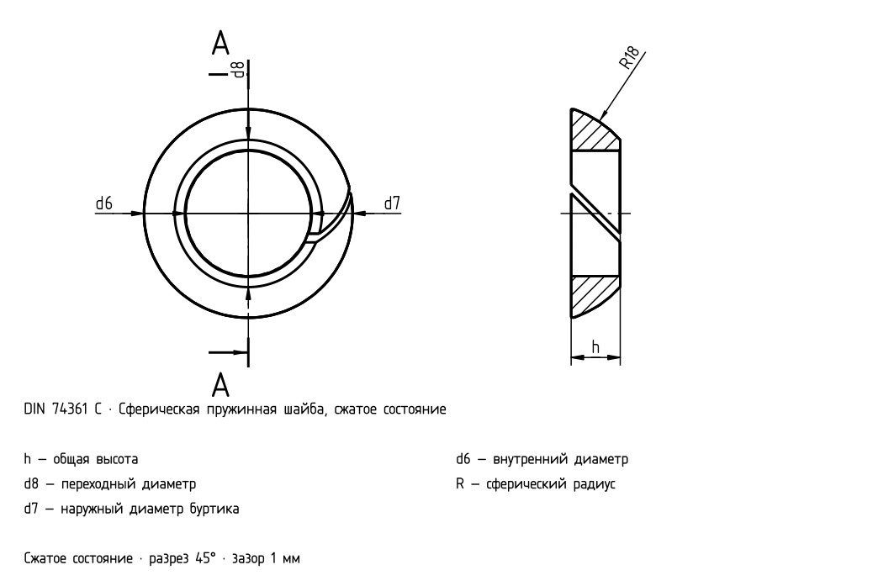

Сферические пружинные шайбы
CS
EN
DE
FR
RU

DIN 74361 C — чертёж нативной модели
DIN 74361 C
Сферические пружинные шайбы
d6 [mm]
d7 [mm]
d8 [mm]
h6 [mm]
R [mm]
12,5
23
14,5
6
12,5
14,5
26
17
6
14,5
18,5
29
20
7
16
20,5
34
24
8
18
22,5
34
24
8
18